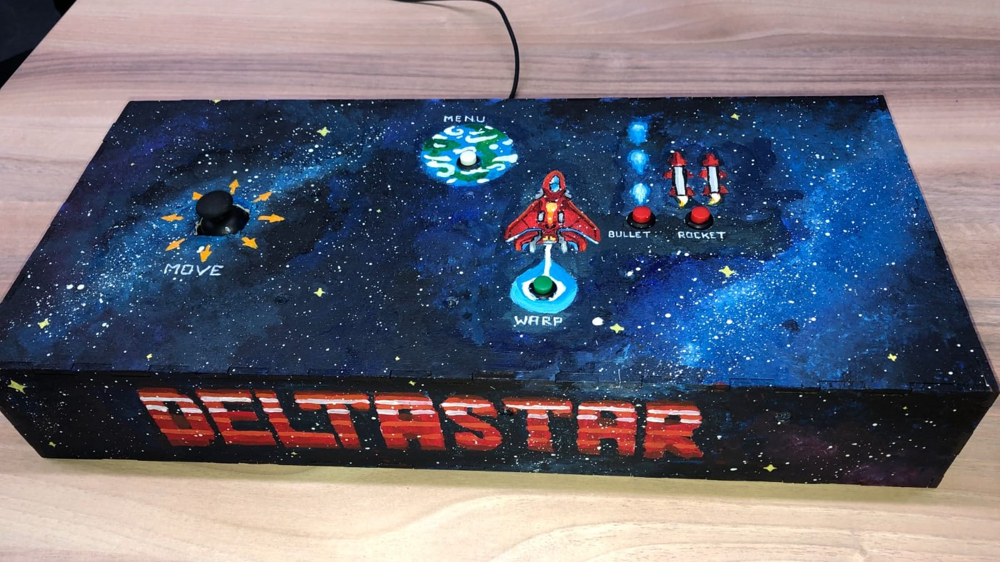

ABOUT

Hello.
I just finished my minor in Game Lab at OAMK in Oulu, Finland as part of my study Creative Media and Game Technologies in the Engineering track in order to become a Game Programmer.
Since I was a kid I have always been fascinated by Games and the way they tell stories and when I finally encountered the wonders of coding in my 7th Grade Computer Science elective I started to dream of making games myself.
Now I am working hard to make that dream come true and doing my best to learn a lot and gather as much experience as I can.
PROJECTS
-
PASS THE GAS
C# Fall 2022 Mobile Idle Tycoon Unity 3 months 3x artists, 3x programmer released on Google Play -
Pass The Gas is an mobile game and an Idle-Tycoon with the objective of building and managing your own Space Gas Station. The Player can build and upgrade structures and gather special resources in a small risk/reward game that we called "Space Expeditions".
It was a project I worked on with a group of 7 people during my minor abroad in Finland. I was mainly responsible for the behaviour of the aliens, walking around and generating income, for everything that had to with the different buildings and their individual functions and the upgrade system. I also did work on integrating the UI into the game together with another developer and took care of connecting the Main Island with the Space Expedition. Aside from that I did some basic events with firebase and helped where I could when smaller Issues happened elsewhere and took part in discussing gameplay changes, planning testing sessions and documenting the development progress.
At this point Pass The Gas is released on Play Store and we are planning on continuing development the best we can next to our own projects/studies.
PASS THE GAS on Playstore -
HEAVENFALL
C# Summer 2022 Mobile Networking Controllers 4 Player Multiplayer top-down co-op shooter Unity 8 weeks 3x artists, 2x designer, 2x programmer -
Heavensfall is a short 2-4 player auto-aim shooter in which players must survive multiple waves of enemies together. Every enemy killed, awards XP and after certain milestones of XP gained, Players level up. A hidden objective of the game is to try to keep the levels of all players more or less even, since any player that kills disproportionally more enemies than their allies becomes corrupted by their deeds and must now be defeated by their former friends.
It was a game I worked on with 5 other people for a multiplayer game festival. The thought was to create a game that was short, easy to pick up for players of all ages and experience levels and still fun for everyone. In order to not have any troubles with keeping track of controllers during the festival, we made it possible for players to scan a QR code and join the game over websockets, using their phones as controllers.
During the 8 weeks of development I was responsible for the networking of the web controllers and in general making the multiplayer aspect work properly. I also worked on player levels and XP, the gameplay loop with different endings, in unity, making the 3D environment work with the 2D characters on the camera, the final boss fight and on solving various bugs that came up during development.
-
HP UWU
C++ Fall 2021 Turn-based comabt no engine/sfml 3 days solo -
HP but UWU is a small project that was born from an assignment that I had to complete for a C++ course. The task was to create a simplefied round-based combat game similar to pokemon with just C++ and the SFML library. I had some pixel art that I had done quickly a while ago and just decided to make use of it for this assignment.
The gameplay is pretty simple. You choose one of three characters and then you fight Voldemort(but uwu). You take alternating turns choosing an action every turn. You have options to Attack(doing damage), Recover(50% to recover HP), Prepare(take less damage next turn) or Cast Magic(do sanity damage). Voldemort(but uwu) will complete a random action every turn with a small chance to do nothing. All actions can be checked in the action log and every time Voldemort(but uwu) dies, he reaches a new form and the player gains 100 points. When the Player dies, the score gets logged into teh highscore file.
I had a lot of fun with this small project and especially working with C++ was nice. I hadn't done anything in C++ before so it was certainly different, but I enjoyed it immensely once I got immersed in it. I have continued working on the project, now and then just for fun and I still have plans to add small animations and sounds as well as add something for players to input their own names into the highscore file. I have also long been considering a way to progress the character when defeating an enemy. And adding more opponents instead of different versions of Voldemort(but uwu).
HP (but uwu) on Github -
ENSCHEDE LOST CHAPTER
C# Spring 2021 AR GPS Mobile App Unity 3 weeks 3x artists, 2x designer, 2x programmers -
Enschede's Lost Chapter is a mobile App for and Augmented Reality Treasure Hunt in the city of Enschede. The users can explore the city and will receive audio feedback, when reaching a point of interest. By following the sound, they are able to find a variety of buildings in downtown Enschede and use the camera to see what the environment looked like many years ago as well as learn some interesting facts about what happened and who lived at these places.
I worked on this project with a group of 5 people in Unity. I worked on the GPS integration with a custom map by researching and integrating the Mapbox SDK and implemented the audio feedback. It works by the user entering an area of interest which then triggers a sound relating to the corresponding building. Then the app changes the volume of the sound based on your distance to the actual building.
-
Zoo Adventure
C# Summer 2020 Virtual Zoo Experience Gxp Engine 2 weeks 2x artists, 1x designer, 1 programmer (me) -
Zoo Adventure is a small application created to digitally imitate the experience of going to the Zoo for kids who cannot go outside because of the Corona Virus. This was a school project that I did all the programming for.
The kids can choose their avatar and walk with WASD/Arrow keys through the Zoo, watch the animals go about their day and hear the characteristic sounds as well as click animals to pet them and drag the right food from their inventory towards the animals in order to feed them.
-
DELTASTAR
C# Fall 2019 Arcade Bullet Hell GXP Engine 2 weeks 2x artists, 1x designer, 1 programmer (me) -
Delta Star is an Arcade Game and it was one of the first games I ever got to work on. It is also to this day one of my favorites, because it was just such a fun project to do.
In the game you control a spaceship and must defeat various waves of aliens by dodging their attacks and shooting them with bullets and rockets. You can do a short teleport "warp" for a last inute escape from enemy bullets and when enemies die they have a chance to drop debuffs. These debuffs lower your speed, rocket/bullet cooldown or other stats by a percentage. After a while a boss will spawn and after defeating it all collected debuffs turn into buffs and the game starts anew with a strong boss to all enemie's stats.
For this project I did the programming on my own in C# using an engine our teachers had created (Gxp Engine) and I painted the controller we had to built with acrylic paints (one of my hobbies).
-
PN
Java Spring 2019 Point&Click Horror Processing 2 weeks 2x artists, 2x designer, 1 programmer -
PN was the first 'proper' game I programmed that wasn't just a very rough ugly prototype. It was the firts group project after we'd had 2 months of coding classes, learning Processing. The task was to create a short point&click game and we were inspired by the horror demo P.T. (Playable Trailer) where (for those that don't know) you explore a hallway and everytime you leave a room things change around you.
P.N. (Playable Nightmare) has 3(~4) different rooms. The player wakes up in a locked room with a big door behind which they can hear someone else desperately asking to be let out. The player needs to try to find a door and a key to get past teh extensive security of this heavy door. As the player finds things and explores different areas other past areas change and finally there is a spooky reveal at the end.
Looking back at this project, despite it having been a very stressful two weeks and remembering all the issues we had with organizing and working in this group dynamic of artists, designers and programmers for the first time, I still believe this was a very exiting project. I had so many doubts about choosing Programming as my specialization track in this study, because I just didn't know if I could do it, but programming every day from morning to evening and figuring out how to do all these things one by one, solving problems as they came up all on my own, it was just such a fun time and even if I got stuck I always managed to get 'unstuck' again. After this project I just knew I really really wanted to try, because of all the things to do in game development, making it all work was with code was magical. I was a wizard writing my own spells.